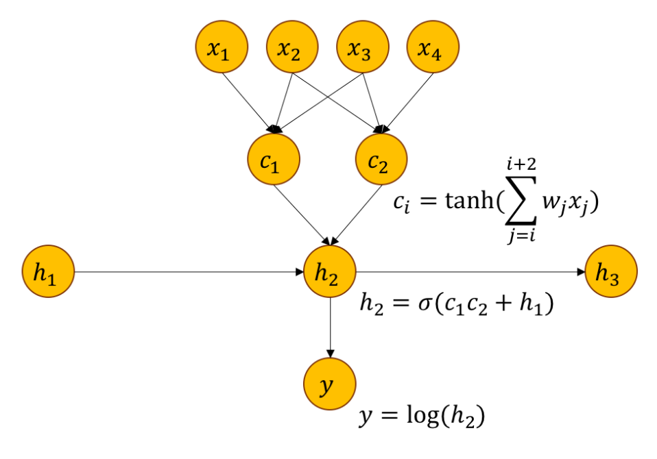

Lecture 1: Training Neural Networks
presented by Siyu Tang
The simplest perceptron can be represented as \[y = \sigma(w^Tx+b) \] where \(w = [w_0, w_1, ..., w_n]\) is a set of weights, and \(x = [x_0, x_1, ..., x_n]\) is the feature vector, and the bias is a vector \(\mathbf{b}\). We need to prove that activation functions can only approximate linear functions: to show we use induction. The base case is easy \[ \mathbf{x^{(1)}} = W^{(1)} \mathbf{x}+b^{(1)} \Rightarrow \mathbf{z^{(1)}} = \sigma(\mathbf{x}^{(1)}) = A^{(1)}\mathbf{x}+B^{(1)} \] By induction, assume that \(\mathbf{z}^{(l)} = A^{(l)}\mathbf{x}+ B^{(l)} \) we prove that \(\mathbf{z}^{(l+1)} = A^{(l+1)}\mathbf{x}+ B^{(l+1)}\). Note that \(\mathbf{z}^{l+1} = \sigma(\mathbf{x}^{l+1}) = \alpha \mathbf{x}^{(l+1)}+\beta I \) by linearity of \(\sigma\). Now \(\mathbf{x}^{(l+1)} = W^{(l+1)} \mathbf{z}^{l} + \mathbf{b}^{(l+1)} = W^{(l+1)}(A^{(l)}\mathbf{x}+ B^{(l)})+ \mathbf{b}^{(l+1)} \) which means that \[\mathbf{z}^{(l+1)} = \alpha (W^{(l+1)}(A^{(l)}\mathbf{x}+ B^{(l)})+ \mathbf{b}^{(l+1)})+\beta I\] by simplifying further we prove the claim.
Now we want to model the XOR function linearly, then we use the normal equation \( \beta = (X^T X)^{-1} \cdot (X^Ty) \) note that we let the first element of the feature vector be 1 to represent the bias. Using this equation we get that least squares solution is \(\mathbf{w} = 0\) and \(b=\frac{1}{2}\). Since XOR is not linearly separable we need to map \((x_1, x_2)\) to \((h_1, h_2)\) in the hyperspace. It turns out we can learn the XOR using a multi-layered perceptron using the function \( f(\mathbf{x}; W, \mathbf{c}, \mathbf{w}, b) = \mathbf{w}^T\max \{ 0, XW+\mathbf{c}\} + b \) with \(b=0, \mathbf{w} = [1, -2]^T, \mathbf{c} = [0, -1]^T, \text{ and } W =\begin{bmatrix} 1 & 1\\ 1 & 1 \end{bmatrix} \).
Universal Approximation Theory
Given that \(\sigma \in C^{\infty}(\mathbb{R}) \) is non-linear (e.g. sigmoid) what type of functions can we learn. We can learn continuous functions. Given enough hidden units, one layer is enough in theory. In practice, deeper net is better. Using a MLP, we have
\[
\exists g(x) \text{ as NN}, g(x) \approx f(x), \text{ and } |g(x) - f(x)| < \epsilon
\]
To prove the universal approximation theory, one shows that a two-layer NN can model a bump, and that the more hidden units there are the more bumps we achieve. Of course, these bumps represent the localized approximations to the function \(f(x)\).
Homework 1
Multivariable Chain Rule:
The gradient \(\nabla_x f\) of a function \(f: \mathbb{R}^n \rightarrow \mathbb{R} \), \(f: \mathbf{x} \mapsto y \) is defined as \(\nabla_x f = [ \frac{\partial y}{\partial x_1}, ..., \frac{\partial y}{\partial x_n} ]^T \in \mathbb{R}^n\). The Jacobian
\(J(g)_x\) of a function \(g: \mathbb{R}^n \rightarrow \mathbb{R}^m \), \(g: \mathbf{x} \mapsto \mathbf{y} \) is defined as a matrix of size \(\mathbb{R}^{m\times n}\), where each element \(J(g)_{\mathbf{x}, i, j}\) is defined as \( J(g)_{\mathbf{x}, i, j} = \frac{\partial y_i}{\partial x_j} \). Therefore, the transposed gradient can be regarded as a special case of the Jacobian, where \(m=1 \).
In higher dimensions, where \(\mathbf{g}: \mathbb{R}^n \rightarrow \mathbb{R}^m, \ \mathbf{x} \mapsto \mathbf{y} \) and \(f: \mathbb{R}^m \rightarrow \mathbb{R}^l, \ \mathbf{y} \mapsto \mathbf{z} \) the chain rule states: \[
\frac{\partial z_k}{\partial x_j} = \sum_{i=1}^{m} \frac{\partial z_k}{\partial y_i}\frac{\partial y_i}{\partial x_j}
\]
1.1 Chain rule for Jacobians
Given the definitions above, show that \( \frac{\partial \mathbf{z}}{\partial \mathbf{x}} = \frac{\partial \mathbf{z}}{\partial \mathbf{y}} \frac{\partial \mathbf{y}}{\partial \mathbf{x}} \). What are the dimensions?
Hint: first derive \(\frac{\partial z_k}{\partial \mathbf{x}}\).
Solution: Note first that the dimension of \(\frac{\partial \mathbf{z}}{\partial \mathbf{x}} \) is \( l\times n\). The \(kth\) row is given by \(\frac{\partial z_k}{\partial \mathbf{x}} \) and that the \(ith\) column in that row is given by
\( \sum_{i=1}^{m} \frac{\partial z_k}{\partial y_i}\frac{\partial y_i}{\partial x_j} \) simplifying the notation gives \( \sum_{i=1}^{m} \left(\frac{\partial z}{\partial y}\right)_{k, i}\left(\frac{\partial y}{\partial x}\right)_{i, j} \) i.e. we are taking the dot product of
the \(kth\) row of \( \frac{\partial \mathbf{z}}{\partial \mathbf{y}}\) with the \(jth\) column of \( \frac{\partial \mathbf{y}}{\partial \mathbf{x}} \).
Chain rule for graphs
Given the neural net of architecture

derive \( \frac{\partial y}{\partial x_2} \)
Solution: We follow the path to \(x_2\) from \(y\) but in this case we see that there are two paths. Thus, there will be two summands: \( \frac{\partial y}{\partial x_2} = \frac{\partial y}{\partial h_2} \frac{\partial h_2}{\partial c_1} \frac{\partial c_1}{\partial x_2} + \frac{\partial y}{\partial h_2} \frac{\partial h_2}{\partial c_2} \frac{\partial c_2}{\partial x_2} \) we thus get
\( \frac{1}{h_2}\sigma(c_1c_2 + h_1)(1 - \sigma(c_1c_2 +h_1))c_2 (1 - \tanh^2(\sum_{j=1} ... ))w_2 \) as the derivative of the branch that passes through \(c_1\). Note the derivative of \(\tanh\) is \(1-\tanh^2\), and the derivative of \(\sigma(u)\) is \(\sigma(u)(1- \sigma(u))\)